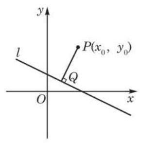

例题 1
例 1 根据下列条件,求点 到直线 的距离 :
(1) ， ；
(2) ， .
学生阅读版 / 沪教版高中数学
选择性必修第一册
第1章平面直角坐标系中的直线 · 保留教材主线与原题
教材与正式教参整合
我们首先讨论直线 ( 不同时为零) 外一点 到这条直线的距离. 根据点到直线距离的定义, 如图 1-4-1,过点 作直线 的垂线,设垂足是 ,则线段 的长度就是点 到直线 的距离 . 因此,只要求出 所在直线的方程,然后与 的方程联立得到一个二元一次方程组,解这个方程组就可以得到点 的坐标,进而利用两点间的距离公式求出 的长度. 这种方法的思路很清晰,但运算量比较大. 为了简便计算, 我们介绍另外一种方法.

图 1-4-1
由直线 的一般式方程知, 是 的一个法向量, 所以 ,即 ,从而
因为点 在 上,所以 ,即
所以, ,从而得到点 到直线 的距离公式
当点 在直线 上时,上述公式仍然成立,此时 .
例 1 根据下列条件,求点 到直线 的距离 :
(1) ， ；
(2) ， .
例 2 求平行直线 与 之间的距离.
例 3 已知直线 ,直线 与 平行,且与 的距离为 2 . 求直线 的方程.
(1) ；
(2) ；
(3)
(4) .
(1) ；
(2) .
(1) ；
(2) .